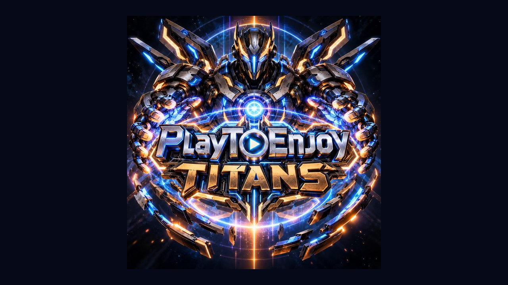

Steam Big Picture Helper
Available now

About the helper
The Steam Big Picture Helper is a small free tool for Windows that gets Steam ready for blind and low vision gamers in one go. Big Picture mode is Steam’s full-screen view, and it is the most accessible way into Steam for blind gamers.
When you run it, the helper looks for Steam on your computer. If Steam is already installed, it opens it in Big Picture mode. If it isn’t, the helper downloads Steam from Valve, installs it, and then opens it in Big Picture mode.
If you aren’t signed in to Steam yet, it opens at the sign-in screen, ready for you. It also leaves a Steam Big Picture shortcut on your desktop, so Steam opens in Big Picture mode every time you launch it.
Good to know: the helper sets Steam’s language to English, closes Steam for a moment if it is already open, and swaps Steam’s own desktop shortcut for the Big Picture one. It does not touch your games or your Steam account.
Last updated: 18 October 2026 (Version 1.0)
Downloads
By downloading, you agree to our licence. The helper is free for you to use and enjoy, but it belongs to PlayToEnjoy Titans: please do not copy it, share the file or reuse anything in it. Send your friends here to get their own copy.
Helper
Version 1.0, for Windows 10 or 11. It needs an internet connection if Steam has to be downloaded.
- Download for WindowsProgram file (.exe), about 9 KB.
How to use it
Choosing the download link starts the download straight away, and the file goes into your Downloads folder.
- Run SteamBigPictureSetup.exe. The helper is not signed by Microsoft, so Windows may say “Windows protected your PC”. Choose More info, then Run anyway.
- Windows asks whether to let the app make changes to your device. Choose Yes: the helper needs this to install Steam.
- The helper is a text window that your screen reader reads line by line. If Steam needs installing, the download and install take a few minutes.
- Steam opens in Big Picture mode. If you aren’t signed in, it opens at the sign-in screen. When the helper says Setup complete, press any key to close it.
From then on, open Steam with the Steam Big Picture shortcut on your desktop. You can run the helper again at any time: it finds your Steam and sets it up again.
System requirements
Minimum
- Windows 10 or Windows 11.
- An internet connection, if Steam is not installed yet.
- Room on your computer for Steam, if it is not installed yet.
Recommended
- NVDA or JAWS screen reader (Narrator also works).
- A controller, which suits Big Picture mode best.
Feedback
Tell us what you think, or report a problem.
- Send feedback about Steam Big Picture Helper (opens your email app)
- Join us on Discord
- Join our WhatsApp group